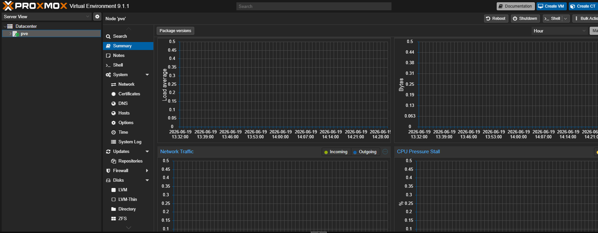
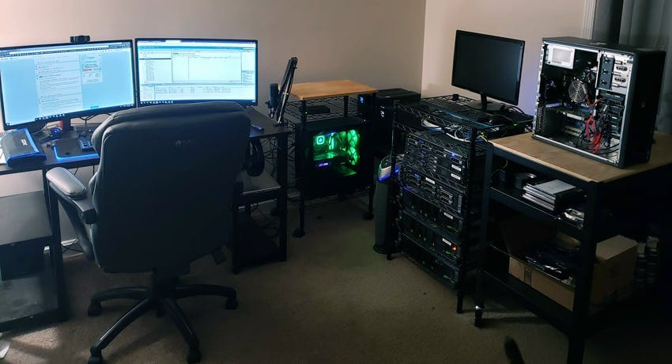
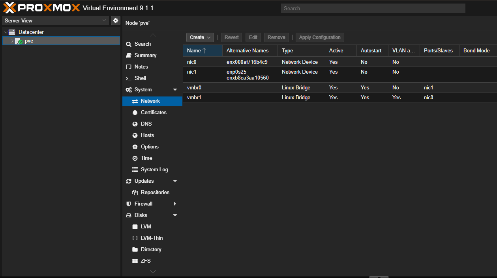

Network Infrastructure and Services Lab
A hands-on Proxmox-based virtualization lab for practicing infrastructure, networking, and systems administration.

Why I Built This Lab
Academic coursework provided theory, but hands-on experience is where real learning happens. This lab bridges that gap by offering a sandbox where mistakes become lessons rather than production incidents.
Building and troubleshooting real virtual environments accelerated my understanding of how systems interact and fail. When domain joins fail, DNS doesn't resolve, or permissions block access, I had to investigate logs, test hypotheses, and implement solutions—skills that define systems engineers and infrastructure professionals.
Enterprise IT departments manage complex multi-system architectures with domain services, DHCP, DNS, file sharing, and user management. By replicating these scenarios in a lab, I gained practical experience deploying Windows Server, configuring Active Directory, managing permissions, and maintaining network services. These hands-on skills are directly applicable to systems administration roles and cloud infrastructure careers.
Hands-on experience with hypervisors, virtual networking, storage allocation, and resource management is essential for infrastructure and cloud careers. The lab provided practical exposure to provisioning VMs, configuring networking, managing compute resources, and understanding the fundamentals of how production environments operate at scale.
Environment Architecture
Core Systems
Proxmox Hypervisor
Bare-metal virtualization platform managing compute, storage, and networking for all VMs and containers. Features clustering for high availability and resource balancing.
Windows Server (DC)
Domain controller running Active Directory, DHCP, and DNS. Serves as the centralized authentication and network configuration authority for all machines.
Windows Clients
Domain-joined machines for testing group policies, file sharing, and workstation management. Simulates how end-user devices interact with enterprise infrastructure.
Linux Systems
Debian-based VMs for networking, NFS file sharing, and cross-platform testing. Demonstrates heterogeneous environments coexisting on the same network.
Key Infrastructure Details
The backbone of this lab consists of two Dell Optiplex workstations repurposed to provide the compute, storage, and networking infrastructure for everything to run.
Node 1: Network Service
Platform: Dell OptiPlex 7010 DT
CPU: Intel Core i3-3320 (2 Cores / 4 Threads)
Memory: 24GB DDR3 RAM
Storage: 80GB HDD
Network: 1GbE Ethernet
Role: Virtual Firewall/Router, Linux bridges
Node 2: Server & Clients
Platform: Dell OptiPlex 7050 MT
CPU: Intel Core i7-6700K (4 Cores / 8 Threads)
Memory: 16GB DDR4 RAM
Storage: 119GB SATA M.2 SSD
Network: 1GbE Ethernet
Role: Windows Server, Windows & Linux Clients, Testing
Technologies Implemented
Virtualization & Resource Management
VM provisioning with vCPU, memory, and storage allocation. Configured virtual network adapters, tested snapshots, and practiced lifecycle management for infrastructure workloads.
Virtual Networking
Proxmox-managed virtual networks connecting all VMs on shared subnets. Designed routing, VLAN segmentation, and network services to support lab traffic and isolation.
Backup & Recovery
Proxmox snapshot and backup workflows for capturing VM states. Practiced restoration and rollback techniques to maintain lab stability during configuration changes.
Lab in Action
Screenshots and system views demonstrating the infrastructure and services.


